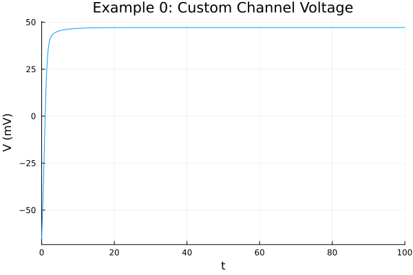
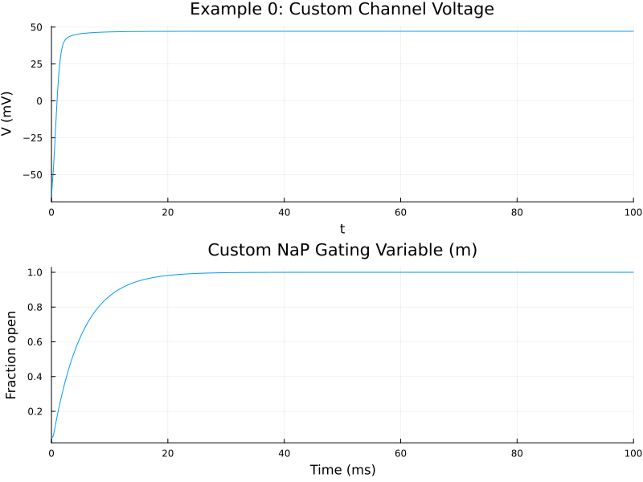

Building Custom Ion Channels from Scratch
In Example 1, we used GateSpec and GenericChannel to build a Hodgkin-Huxley neuron in just a few lines of code. But what if you need a channel that doesn't fit the standard alpha/beta gating paradigm? What if you want to implement a complex Markov chain model, or non-standard biophysics?
GenericChannel isn't a black box—it's just a convenience wrapper around standard ModelingToolkit components.
The only rule for an ion channel in this toolkit is that it must be an MTK system that extends a standard electrical OnePort. Let's prove it by building a custom leak channel and a custom persistent sodium channel (NaP) from first principles.
Synapses are very similar. You can look at the source code for e.g., exponential synapses and extend them similarly.
using MTKNeuralToolkit
using ModelingToolkit: mtkcompile, @named, @variables, @parameters, t_nounits as t, D_nounits as D, extend, @component, @unpack, System
using ModelingToolkitStandardLibrary.Electrical: OnePort
using OrdinaryDiffEq
using Plots1. A Custom Leak Channel
A leak channel has no states; it simply follows Ohm's law:
\[I = g(V - E)\]
We define it as an MTK @component that wraps an OnePort. The steps are:
- Instantiate the OnePort to get the voltage
vand currenti. - Define parameters
gandE_rev. - Write the governing equation.
- Extend the OnePort with our equations. This tells MTK that our component behaves as an electrical OnePort, which is exactly what
build_compartmentexpects.
@component function CustomLeakChannel(; name, g=0.3, E_rev=-54.4)
@named oneport = OnePort()
@unpack v, i = oneport
@parameters g=g E_rev=E_rev
eqs = [i ~ g * (v - E_rev)]
return extend(System(eqs, t, [], [g, E_rev]; name=name), oneport)
endCustomLeakChannel (generic function with 1 method)2. A Custom Persistent Sodium Channel (NaP)
Let's build a channel with a single gating variable, m, that does not inactivate (persistent). We'll use a custom steady-state function and a time constant, writing out the ODE manually.
The gating ODE is:
\[\frac{dm}{dt} = \frac{m_{\infty} - m}{\tau}\]
And the current equation is:
\[I = g \cdot m^p \cdot (V - E)\]
Let's use $p=1$ for NaP. We initialize the state variable m based on V_init.
@component function CustomNaPChannel(; name, g=10.0, E_rev=50.0, V_init=-65.0)
@named oneport = OnePort()
@unpack v, i = oneport
@parameters g=g E_rev=E_rev
@variables m(t) = 1.0 / (1.0 + exp(-(V_init + 50.0) / 5.0))
m_inf(V) = 1.0 / (1.0 + exp(-(V + 50.0) / 5.0))
tau_m = 5.0
eqs = [
D(m) ~ (m_inf(v) - m) / tau_m,
i ~ g * m * (v - E_rev)
]
return extend(System(eqs, t, [m], [g, E_rev]; name=name), oneport)
endCustomNaPChannel (generic function with 1 method)3. Assemble the Compartment
We instantiate our custom channels and a standard Capacitor. Note that build_compartment doesn't know or care that these are custom; it just connects their positive pins to the membrane voltage and grounds the negative pins.
top = Scalar() # Define a scalar topology
@named cap = Capacitor(topology=top, C=1.0)
@named leak = CustomLeakChannel()
@named nap = CustomNaPChannel()Model nap:
Subsystems (2): see hierarchy(nap)
p
n
Equations (7):
5 standard: see equations(nap)
2 connecting: see equations(expand_connections(nap))
Unknowns (7): see unknowns(nap)
v(t)
i(t)
m(t)
p₊v(t)
⋮
Parameters (2): see parameters(nap)
g
E_revbuild_compartment handles the wiring just like in Example 1.
channels = [leak, nap]
soma = build_compartment(cap, channels; name=:soma, V_init=-65.0, topology=top)Compartment{NoMorphology, NoGeometry, Float64}(Model soma:
Subsystems (7): see hierarchy(soma)
cap
injector
syn_injector
p
⋮
Equations (38):
24 standard: see equations(soma)
14 connecting: see equations(expand_connections(soma))
Unknowns (37): see unknowns(soma)
cap₊v(t)
cap₊i(t)
cap₊p₊v(t)
cap₊p₊i(t)
⋮
Parameters (5): see parameters(soma)
cap₊C
leak₊g
leak₊E_rev
nap₊g
⋮, (V = soma₊cap₊v(t), p_pin = Model soma₊p:
Equations (2):
2 connecting: see equations(expand_connections(soma₊p))
Unknowns (2): see unknowns(soma₊p)
v(t)
i(t), n_pin = Model soma₊n:
Equations (2):
2 connecting: see equations(expand_connections(soma₊n))
Unknowns (2): see unknowns(soma₊n)
v(t)
i(t), I_ext = soma₊injector₊I₊u(t), I_syn = soma₊syn_injector₊I₊u(t), cap_name = :cap), -65.0, Scalar(), NoGeometry(), NoMorphology())4. Build and Simulate
We'll inject a small current to see how the persistent sodium channel interacts with the leak channel to create a steady depolarized state.
drivers = [(1, 2.0)]
net = build_acausal_network([soma]; drivers=drivers, name=:custom_neuron)
println("Compiling custom channel neuron...")
sys = mtkcompile(net.sys)
prob = ODEProblem(sys, [], (0.0, 100.0))
println("Solving...")
sol = solve(prob, Rosenbrock23(), reltol=1e-4, abstol=1e-4)retcode: Success
Interpolation: specialized 2nd order "free" stiffness-aware interpolation
t: 88-element Vector{Float64}:
0.0
0.0012501739956439345
0.0206097032318029
0.039969232467961864
0.07556096691783404
0.1111527013677062
0.1566873295232779
0.2022219576788496
0.2504812464902859
0.29874053530172223
⋮
24.037970853133118
27.101561326850348
30.79717890558891
35.40393491713189
41.42992427012772
49.92628954411219
63.581814207884044
92.89418038495506
100.0
u: 88-element Vector{Vector{Float64}}:
[0.04742587317756678, -65.0]
[0.04742595775449338, -64.9253759854762]
[0.04744999458832616, -63.77872780373131]
[0.047523430450827145, -62.648088859189684]
[0.0478182385814619, -60.60622915203647]
[0.04838558103120771, -58.60357151857695]
[0.049644871828944365, -56.078102419476274]
[0.05169733952103672, -53.56458037326817]
[0.05495463633770272, -50.87155271266383]
[0.059474246020049276, -48.10165443439661]
⋮
[0.991920007130865, 47.13043887694605]
[0.9956658744873588, 47.14112828735096]
[0.9979678705076583, 47.147658057687764]
[0.9992207322125657, 47.151199540938194]
[0.9997868150979198, 47.152796913319534]
[0.9999718520633931, 47.153318693587146]
[1.0000011366539605, 47.15340126116649]
[0.9999997757415475, 47.153397426401874]
[0.9999999511145985, 47.153397920671985]5. Plot the Results
We can access the variables of our custom components exactly as we would with the pre-built channels, reaching into the compiled system's namespace.
p1 = plot(sol, idxs=[sys.soma.cap.v],
title="Example 0: Custom Channel Voltage",
ylabel="V (mV)", legend=false)
Look at the gating variable m of our custom NaP channel!
p2 = plot(sol, idxs=[sys.soma.nap.m],
title="Custom NaP Gating Variable (m)",
ylabel="Fraction open", xlabel="Time (ms)", legend=false)
plot(p1, p2, layout=(2,1), size=(800, 600))
OK... nobody said it was going to be an interesting channel!
This page was generated using Literate.jl.